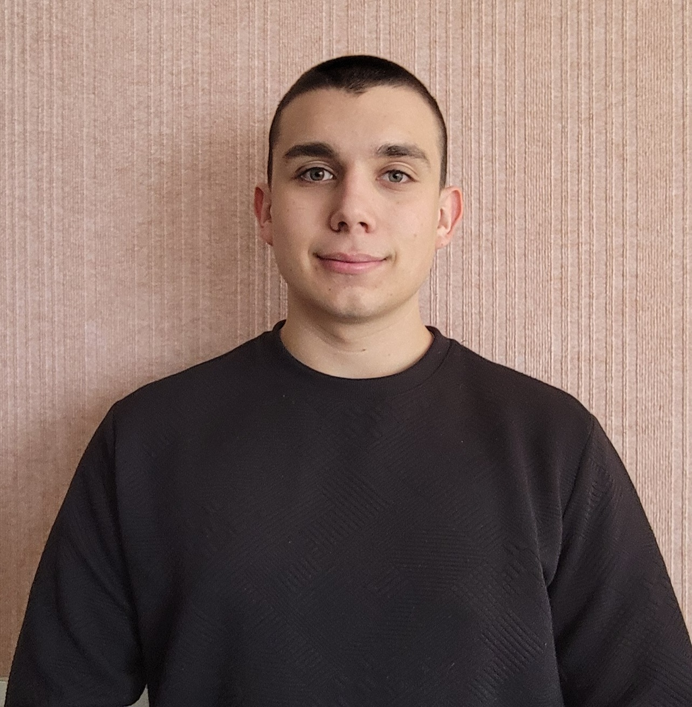

Curriculum Vitae

Informations personnelles :
Bouvot Marc
Né le 22 août 2007
Homme
11 Rue d'archamp
25640 Pouligney
marc.bouvot@gmail.com
07 66 17 89 57
Permis A1, B
Profile :
Étudiant passionné par l'informatique, je suis à la recherche d'un stage en informatique pour mettre en pratique mes connaissances en programmation, développement WEB et administration système. Rigoureux et curieux, je souhaite contribuer activement aux projets innovants.
Formation :
- 2025 - Présent : Brevet de Technicien Supérieur Services Informatiques aux Organisations au Lycée Louis Pergaud, Besançon
- 2022 - 2025 : Baccalauréat général mention Bien avec les spécialités Mathématiques et Numérique, Sciences Informatiques au Lycée Louis Pergaud, Besançon
- 2022 - 2023 : Brevet d'Initiation Aéronautique mention Assez Bien au Lycée Louis Pergaud, Besançon
- 2018 - 2022 : Diplôme National du Brevet mention Très Bien au Collège Aigremont, Roulans
Expériences professionnelles :
Je suis sapeur-pompier volontaire dans le Service Départemental d'Incendie et de Secours du Doubs depuis maintenant deux ans. Je suis également correspondant informatique au sein de plusieurs casernes.
Cours :
- Latin : J'ai suivis des cours de latin depuis ma cinquième jusqu'à ma seconde. J'ai pus découvrir l'histoire Antique et la traduction de langue mort tel que le Latin et le Grec ancien.
- Atelier astronomie : Durant toutes mes années de collège, j'ai pus participer a l'atelier astronomie qui avait pour objectif de nous faire découvrir le fonctionnement de l'univers de manière ludique.
- Tutorat : Pendant mon année de troisième, à travers l'option tutorat, j'ai pus venir en aide à des élèves de sixième en difficulté scolaire en leurs donnant des cours de soutien.
Compétences :
- Utilisations de langage de programmation : Python, PHP ●●●○○
- Utilisations de base de données (SQL, NoSQL) ●●●●○
- Travail en équipe ●●●●●
Qualités :
Je suis une personne rigoureuse, capable de travailler de manière autonome tout en étant un bon communicant au sein d'une équipe. Je sais également gerer mon stress dans des situations d'urgence.
Langues :
- Français : Langue maternelle
- Anglais : Niveau intermédiaire (B1)
- Espagnol : Niveau débutant (A2)
Activités extra-scolaires :
- Tuteur à l'AFEV :
Pendant 6 mois, j'ai eu la chance d'être tuteur à l'Association de la Fondation Étudiante pour la Ville. Durant ces 6 mois j'ai accompagner un élève de troisième afin de l'aider à s'integrer au Lycée Louis Pergaud.
- Conseillé Départemental Junior :
J'ai été Conseillé Départemental Junior pendant un mandat de deux ans. Durant ce mandat, j'ai pus participé à des actions de lutte contre le harcèlement et le cyber-harcèlement dont notamment la réalisation d'un podcast en collaboration avec Radio Campus Besançon.
Stage :
Pendant mon stage de découverte en troisième, j'ai découvert le métier de sapeur-pompier professionnel au Centre d'Incendie et de Secours de Besançon Est. J'ai pus participer aux manoeuvres, séances de sport, travaux d'intérêts généraux et tout autre tâche qui incombe un sapeur-pompier.
Centres d'intérêt :
Retourner en haut de la page